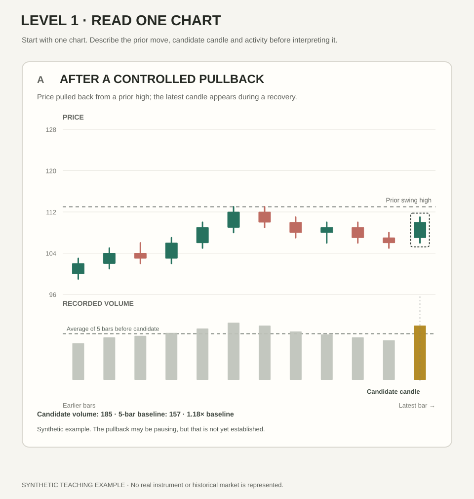
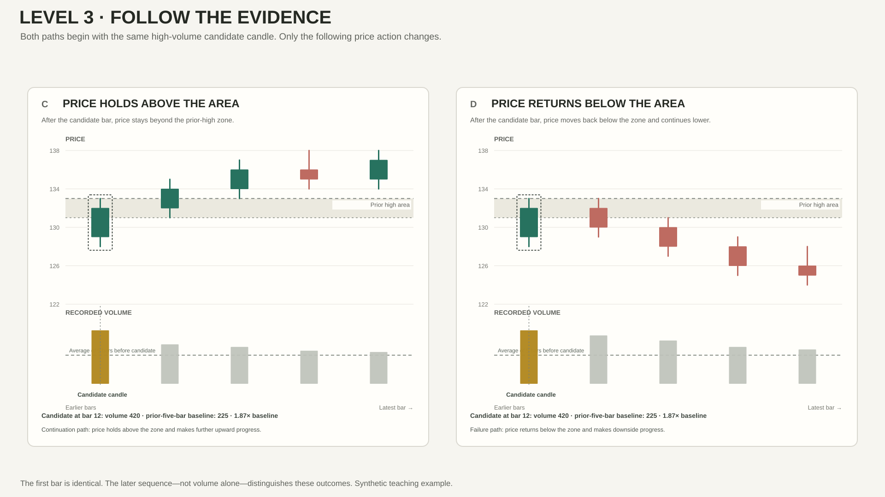

The same candle. Different context.
Work through three levels. Start by describing what you can see, then compare two charts, and finally use later price action to test your reading. These charts use synthetic data; they are not historical market examples or trade signals.
- Level 1 · ObserveEasy · One chart
- Level 2 · CompareGuided · Two contexts
- Level 3 · TransferChallenge · New outcomes
First, describe one chart
Do not decide whether the candle is bullish or bearish. Describe what happened first.

Aim for observations first. One or two careful sentences are enough.
Now compare the contexts
The candidate candles have the same price range and body size. Both charts use the same vertical price-scale increment. What changes is the surrounding price structure and the activity recorded.

Use the next bars to test your reading
Both paths start with the same high-volume green candidate candle near the prior-high area. Watch what happens afterward. The later sequence—not the volume spike alone—changes the evidence.

All three levels completed
Your responses remain only in this page and are not saved to an account or sent to a server. This prototype checks that you have written a response; it does not automatically grade the meaning of your analysis. Use the points below to review your reasoning.
Self-check
Reveal model reasoning and feedback
Level 1 — Observe
Price advanced, pulled back from a prior swing high and then printed a green candle during a recovery. Candidate volume is 185 compared with a baseline of 157, or about 1.18 times that baseline. This is a description, not proof that the pullback has ended.
Level 2 — Compare
Panel A shows a recovery after a pullback with volume only modestly above its local baseline. Panel B shows a similar-size green candle after a longer advance into a prior-high area, with candidate volume 420 against a baseline of 225, or about 1.87 times the baseline. The second event deserves attention because both location and relative activity differ. Neither chart proves a reversal or identifies who traded.
Level 3 — Transfer
In the continuation path, price stays above the prior-high zone and makes further upward progress. In the failure path, it returns below the zone and continues lower. The initial high-volume candle is the same, so it cannot by itself determine which path will occur. A strong answer names the follow-through that supports each reading and states what would change the interpretation.
How to improve an answer
If you wrote only “bullish” or “bearish,” add the visible facts that led you there. If you only described volume, add the price result and location. If you chose an outcome without a condition, name the later price behaviour that would strengthen or weaken your view.
Progression rule: each step adds a reasoning demand, not clutter or unexplained jargon. This is a learning exercise—not a trading signal. The standalone prototype does not save answers or connect to the website's member system.